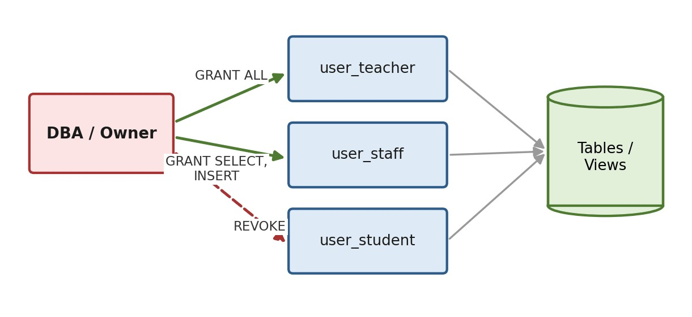

บทที่ 10 · ความปลอดภัยของฐานข้อมูล
บัญชีผู้ใช้ การกำหนดและยกเลิกสิทธิ์ (GRANT / REVOKE) บทบาท (Role) วิวเพื่อควบคุมการเข้าถึง SQL Injection และแนวปฏิบัติด้านความปลอดภัย
- อธิบายเป้าหมายและองค์ประกอบด้านความปลอดภัยของฐานข้อมูลได้
- สร้างและจัดการบัญชีผู้ใช้ได้
- กำหนดและยกเลิกสิทธิ์ในระดับฐานข้อมูล ตาราง คอลัมน์ และวิวได้
- ออกแบบสิทธิ์ตามหลัก Least Privilege และใช้ Role ได้
- อธิบาย SQL Injection และป้องกันด้วย Prepared Statement ได้
10.1 ภาพรวมความปลอดภัยของฐานข้อมูล
ความปลอดภัยของฐานข้อมูลครอบคลุม 3 เป้าหมายหลัก (CIA)
| เป้าหมาย | ความหมาย | ตัวอย่างภัย | เครื่องมือในบทนี้ |
|---|---|---|---|
| Confidentiality | เฉพาะผู้มีสิทธิ์เท่านั้นที่เห็นข้อมูล | นิสิตแอบดูเกรดคนอื่น | GRANT, View, Role |
| Integrity | ข้อมูลถูกแก้ได้เฉพาะผู้มีสิทธิ์ และถูกต้อง | แก้เกรดตัวเองผ่าน SQL Injection | สิทธิ์ระดับคอลัมน์, Prepared Statement, Trigger |
| Availability | ระบบและข้อมูลพร้อมใช้งาน | ลบตารางโดยไม่ตั้งใจ, ดิสก์เสีย | สิทธิ์ DROP เฉพาะผู้ดูแล, Backup |
10.2 การจัดการบัญชีผู้ใช้
บัญชีใน MySQL มี 2 ส่วน คือ 'ชื่อผู้ใช้'@'เครื่องต้นทาง' — กำหนดได้ว่าบัญชีนี้เชื่อมต่อจากเครื่องใดได้บ้าง
คำสั่งในหัวข้อ 10.2–10.4 ต้องใช้สิทธิ์ผู้ดูแลระบบ บัญชีนิสิตบนเซิร์ฟเวอร์มหาวิทยาลัยจะรันไม่ได้ — ให้ทดลองบน MySQL ในเครื่องตัวเองด้วยบัญชี root
-- เชื่อมต่อได้จากเครื่องเดียวกันเท่านั้น CREATE USER 'reg_staff'@'localhost' IDENTIFIED BY 'StrongPass#2026'; -- เชื่อมต่อได้จากทุกเครื่องในวง 192.168.1.x CREATE USER 'teacher'@'192.168.1.%' IDENTIFIED BY 'Teach#2026'; -- เปลี่ยนรหัสผ่าน และบังคับให้เปลี่ยนเมื่อเข้าใช้ครั้งแรก ALTER USER 'reg_staff'@'localhost' IDENTIFIED BY 'NewPass#2026' PASSWORD EXPIRE; -- ดูรายชื่อบัญชีทั้งหมด และลบบัญชี SELECT user, host FROM mysql.user; DROP USER IF EXISTS 'teacher'@'192.168.1.%';
บัญชีที่เพิ่งสร้างไม่มีสิทธิ์ใด ๆ เลย ต้อง GRANT เพิ่มเสมอ
10.3 การกำหนดและยกเลิกสิทธิ์ (GRANT / REVOKE)

| สิทธิ์ | อนุญาตให้ |
|---|---|
| SELECT / INSERT / UPDATE / DELETE | อ่าน / เพิ่ม / แก้ / ลบข้อมูล |
| CREATE / DROP / ALTER | สร้าง ลบ แก้โครงสร้าง |
| INDEX | สร้างและลบดัชนี |
| EXECUTE | เรียกใช้ Procedure / Function |
| ALL PRIVILEGES | ทุกสิทธิ์ในขอบเขตที่ระบุ |
-- อ่านได้ทุกตารางในฐานข้อมูล GRANT SELECT ON std_66011200.* TO 'teacher'@'192.168.1.%'; -- ระดับตาราง GRANT SELECT, INSERT, UPDATE ON std_66011200.enroll TO 'reg_staff'@'localhost'; -- ระดับคอลัมน์: แก้ได้เฉพาะ grade GRANT UPDATE (grade) ON std_66011200.enroll TO 'teacher'@'192.168.1.%'; -- ทุกสิทธิ์ และมอบต่อได้ GRANT ALL PRIVILEGES ON std_66011200.* TO 'dba'@'localhost' WITH GRANT OPTION; -- ตรวจสิทธิ์ของบัญชี SHOW GRANTS FOR 'teacher'@'192.168.1.%';
ทำให้ผู้รับสิทธิ์มอบสิทธิ์ต่อให้คนอื่นได้ ควบคุมการแพร่กระจายยาก — ใช้กับผู้ดูแลระบบเท่านั้น
REVOKE UPDATE, DELETE ON std_66011200.enroll FROM 'reg_staff'@'localhost'; REVOKE ALL PRIVILEGES, GRANT OPTION FROM 'teacher'@'192.168.1.%';
หลักการให้สิทธิ์เท่าที่จำเป็น (Principle of Least Privilege)
| กลุ่มผู้ใช้ | ตาราง / วิว | สิทธิ์ |
|---|---|---|
| นิสิต | วิว v_my_enroll ของตนเอง | SELECT |
| อาจารย์ | student, subject, section, enroll | SELECT ทั้งหมด + UPDATE เฉพาะ grade |
| เจ้าหน้าที่ทะเบียน | student, section, enroll | SELECT, INSERT, UPDATE, DELETE |
| ฝ่ายบุคคล | lecturer | SELECT, INSERT, UPDATE |
| ผู้ดูแลระบบ | ทุกตาราง | ALL PRIVILEGES |
จงสร้างบัญชี advisor ที่เชื่อมต่อได้จากเครื่องเดียวกันเท่านั้น ให้สิทธิ์อ่าน student และ enroll และแก้ไขได้เฉพาะคอลัมน์ grade ของ enroll จากนั้นยกเลิกสิทธิ์แก้ไขทั้งหมด
CREATE USER 'advisor'@'localhost' IDENTIFIED BY 'Adv#2026'; GRANT SELECT ON std_66011200.student TO 'advisor'@'localhost'; GRANT SELECT, UPDATE (grade) ON std_66011200.enroll TO 'advisor'@'localhost'; REVOKE UPDATE (grade) ON std_66011200.enroll FROM 'advisor'@'localhost'; SHOW GRANTS FOR 'advisor'@'localhost';
10.4 การใช้บทบาท (Role) และวิวเพื่อควบคุมการเข้าถึง
MySQL 8.0+ รองรับ Role — กลุ่มสิทธิ์ที่ตั้งชื่อไว้ แล้วมอบให้ผู้ใช้หลายคนพร้อมกัน
CREATE ROLE 'role_teacher', 'role_staff'; GRANT SELECT ON std_66011200.* TO 'role_teacher'; GRANT UPDATE (grade) ON std_66011200.enroll TO 'role_teacher'; GRANT SELECT, INSERT, UPDATE, DELETE ON std_66011200.enroll TO 'role_staff'; -- มอบบทบาทให้ผู้ใช้ และให้มีผลทันทีเมื่อเข้าสู่ระบบ GRANT 'role_teacher' TO 'teacher'@'192.168.1.%'; SET DEFAULT ROLE ALL TO 'teacher'@'192.168.1.%';
วิว + สิทธิ์ = ผู้ใช้เห็นเฉพาะส่วนที่กำหนด โดยไม่ต้องเข้าถึงตารางจริง
CREATE VIEW v_student_public AS SELECT stdid, name, major FROM student; GRANT SELECT ON std_66011200.v_student_public TO 'guest'@'localhost';
ระบบห้องสมุดมีตาราง book, member, borrow ผู้ใช้ 3 กลุ่ม: สมาชิก (ดูหนังสือ), บรรณารักษ์ (จัดการการยืม-คืน ดูสมาชิก), ผู้ดูแลระบบ จงเขียนคำสั่งสร้าง Role และกำหนดสิทธิ์
CREATE ROLE 'role_member', 'role_librarian', 'role_admin'; GRANT SELECT ON library.book TO 'role_member'; GRANT SELECT ON library.book TO 'role_librarian'; GRANT SELECT ON library.member TO 'role_librarian'; GRANT SELECT, INSERT, UPDATE ON library.borrow TO 'role_librarian'; GRANT ALL PRIVILEGES ON library.* TO 'role_admin';
10.5 การแทรกคำสั่ง SQL (SQL Injection)
ช่องโหว่ที่พบบ่อยที่สุด เกิดจากนำข้อมูลที่ผู้ใช้ป้อนไปต่อสตริงคำสั่ง SQL โดยตรง
sql = "SELECT * FROM student WHERE stdid = '" + user_input + "'";
ถ้าผู้ใช้ป้อน ' OR '1'='1 คำสั่งที่เกิดขึ้นจริงคือ
SELECT * FROM student WHERE stdid = '' OR '1'='1';
| stdid | name | major | gpa | birthday |
|---|---|---|---|---|
| 60001 | Rukawa | CS | 3.75 | 2010-05-13 |
| 60002 | Sakuragi | CS | NULL | 2010-01-15 |
| 60003 | Mitsui | CS | 2.00 | 2013-06-25 |
| 60004 | Sendoh | CS | 3.98 | 2012-12-08 |
| 60005 | NULL | Math | 2.78 | 2011-09-02 |
วิธีป้องกันที่ได้ผลที่สุดคือ Prepared Statement — แยกโครงสร้างคำสั่งออกจากข้อมูล ค่าที่ผู้ใช้ป้อนจะเป็น “ค่า” เสมอ ไม่ใช่ส่วนหนึ่งของคำสั่ง
PREPARE stmt FROM 'SELECT stdid, name FROM student WHERE stdid = ?'; SET @stdid = '60001'; EXECUTE stmt USING @stdid;
| stdid | name |
|---|---|
| 60001 | Rukawa |
SET @stdid = ''' OR ''1''=''1'; EXECUTE stmt USING @stdid; DEALLOCATE PREPARE stmt;
| stdid | name |
|---|
# Python (mysql-connector)
cur.execute("SELECT * FROM student WHERE stdid = %s", (stdid,))
// PHP (PDO)
$stmt = $pdo->prepare('SELECT * FROM student WHERE stdid = ?');
$stmt->execute([$stdid]);10.6 แนวปฏิบัติด้านความปลอดภัย
- ให้สิทธิ์เท่าที่จำเป็น — บัญชีที่โปรแกรมใช้ไม่ควรมี DROP/ALTER และห้ามใช้ root เชื่อมจากโปรแกรม
- ไม่เก็บรหัสผ่านเป็นข้อความธรรมดา — เก็บค่าแฮช + salt ด้วย bcrypt หรือ Argon2
- เข้ารหัสการเชื่อมต่อ ด้วย TLS
- สำรองข้อมูลสม่ำเสมอ และทดสอบกู้คืนจริงเป็นระยะ
- เก็บและตรวจ Log ว่าใครแก้ข้อมูลใด เมื่อใด
- อัปเดตซอฟต์แวร์ เพื่อปิดช่องโหว่
mysqldump -u root -p std_66011200 > backup_20261001.sql mysql -u root -p std_66011200 < backup_20261001.sql
หน้าเข้าสู่ระบบสร้างคำสั่ง "SELECT * FROM users WHERE username='" + u + "' AND password='" + p + "'" ผู้โจมตีป้อน username เป็น admin' -- จะเกิดอะไรขึ้น และแก้อย่างไร
คำสั่งจริงกลายเป็น SELECT * FROM users WHERE username='admin' -- ' AND password='...' — ส่วนหลัง -- กลายเป็นคอมเมนต์ จึงเข้าระบบเป็น admin ได้โดยไม่ต้องรู้รหัสผ่าน
แก้โดยใช้ Prepared Statement: cur.execute("SELECT * FROM users WHERE username=%s", (u,)) แล้วตรวจรหัสผ่านด้วยการเทียบค่าแฮช (ไม่เก็บรหัสผ่านจริง)
คำถามท้ายบท
- ผู้ใช้และสิทธิ์
- สร้างบัญชี advisor ที่เชื่อมต่อได้จากเครื่องเดียวกันเท่านั้น ให้สิทธิ์อ่าน student และ enroll และแก้ไขได้เฉพาะคอลัมน์ grade (GRANT UPDATE (grade))เฉลย
CREATE USER 'advisor'@'localhost' IDENTIFIED BY 'Adv#2026'; GRANT SELECT ON std_66011200.student TO 'advisor'@'localhost'; GRANT SELECT, UPDATE (grade) ON std_66011200.enroll TO 'advisor'@'localhost'; SHOW GRANTS FOR 'advisor'@'localhost';
@'localhost'จำกัดให้เชื่อมต่อได้จากเครื่องเซิร์ฟเวอร์เท่านั้น และUPDATE (grade)อนุญาตให้แก้เฉพาะคอลัมน์ grade — ถ้าสั่งUPDATE enroll SET stdid = …จะถูกปฏิเสธ - ยกเลิกสิทธิ์แก้ไขทั้งหมดของบัญชี advisor แล้วตรวจสอบผล (REVOKE / SHOW GRANTS)เฉลย
REVOKE UPDATE (grade) ON std_66011200.enroll FROM 'advisor'@'localhost'; SHOW GRANTS FOR 'advisor'@'localhost'; -- เหลือเพียง SELECT บน student และ enroll
'teacher'@'localhost'กับ'teacher'@'%'ต่างกันอย่างไร ควรใช้แบบใดในระบบจริง (host)บัญชีใน MySQL ระบุด้วย ชื่อผู้ใช้ + host สองบัญชีนี้จึงเป็นคนละบัญชี —
'teacher'@'localhost'เชื่อมต่อได้จากเครื่องเซิร์ฟเวอร์เท่านั้น ส่วน'teacher'@'%'เชื่อมต่อได้จากทุกเครื่องระบบจริงควรจำกัด host ให้แคบที่สุดเท่าที่ใช้งานได้ เช่น
'teacher'@'192.168.1.%'(เฉพาะเครือข่ายภายใน) หรือ localhost สำหรับบัญชีที่ใช้โดยเว็บแอปบนเครื่องเดียวกัน หลีกเลี่ยง '%' โดยเฉพาะกับบัญชีที่มีสิทธิ์สูง- จงอธิบายหลักการให้สิทธิ์เท่าที่จำเป็น และออกแบบสิทธิ์ของนิสิต อาจารย์ เจ้าหน้าที่ทะเบียน และผู้ดูแลระบบ (Least Privilege)
Principle of Least Privilege — ผู้ใช้แต่ละคนได้รับสิทธิ์เพียงเท่าที่จำเป็นต่อการทำงานเท่านั้น ถ้าบัญชีถูกขโมยหรือใช้ผิดพลาด ความเสียหายจะจำกัด
- นิสิต — SELECT ผ่านวิวที่แสดงเฉพาะข้อมูลของตนเอง (ทรานสคริปต์) และรายวิชาที่เปิด
- อาจารย์ — SELECT รายชื่อในกลุ่มที่สอน (ผ่านวิว) + UPDATE (grade) ของ enroll
- เจ้าหน้าที่ทะเบียน — SELECT, INSERT, UPDATE บน student, section, enroll (ไม่ให้ DELETE หรือ DROP)
- ผู้ดูแลระบบ (DBA) — ALL PRIVILEGES รวมการสร้างผู้ใช้และสำรองข้อมูล (บัญชีแยก ใช้เท่าที่จำเป็น)
- เหตุใดจึงไม่ควรใช้ WITH GRANT OPTION กับผู้ใช้ทั่วไป (สิทธิ์แพร่กระจาย)
WITH GRANT OPTIONทำให้ผู้รับสิทธิ์ส่งต่อสิทธิ์นั้นให้ผู้อื่นได้ สิทธิ์จะแพร่กระจายออกไปโดย DBA ควบคุมและตรวจสอบไม่ได้ว่าใครมีสิทธิ์อะไร จึงควรให้เฉพาะผู้ดูแลระบบ - Role และวิว
- ออกแบบ Role สำหรับระบบห้องสมุดที่มีสมาชิก บรรณารักษ์ และผู้ดูแลระบบ พร้อมเขียนคำสั่ง (CREATE ROLE / GRANT role TO user)เฉลย
CREATE ROLE 'role_member', 'role_librarian', 'role_admin'; GRANT SELECT ON library.book TO 'role_member'; GRANT SELECT ON library.category TO 'role_member'; GRANT SELECT, INSERT, UPDATE ON library.* TO 'role_librarian'; GRANT DELETE ON library.borrow TO 'role_librarian'; GRANT ALL PRIVILEGES ON library.* TO 'role_admin'; CREATE USER 'somchai'@'localhost' IDENTIFIED BY 'Lib#2026'; GRANT 'role_librarian' TO 'somchai'@'localhost'; SET DEFAULT ROLE 'role_librarian' TO 'somchai'@'localhost';
ข้อดีของ Role: กำหนดสิทธิ์เป็นกลุ่มครั้งเดียว เมื่อมีบรรณารักษ์ใหม่ก็ GRANT role ให้ทันที และเปลี่ยนสิทธิ์ของทั้งกลุ่มได้ที่จุดเดียว
- สร้างวิวที่แสดงเฉพาะรหัส ชื่อ สาขาของนิสิต แล้วให้สิทธิ์ผู้ใช้ guest อ่านเฉพาะวิวนี้ อธิบายประโยชน์ (GRANT SELECT ON view)เฉลย
CREATE OR REPLACE VIEW v_student_public AS SELECT stdid, name, major FROM student;
เฉลยCREATE USER 'guest'@'localhost' IDENTIFIED BY 'Guest#2026'; GRANT SELECT ON std_66011200.v_student_public TO 'guest'@'localhost';
guest เห็นเพียงรหัส ชื่อ สาขา ไม่เห็น gpa และวันเกิด และไม่มีสิทธิ์บนตาราง student โดยตรง — เป็นการควบคุมสิทธิ์ระดับคอลัมน์และแถวด้วยวิว (บทที่ 7) ถ้าภายหลังต้องซ่อนข้อมูลเพิ่ม แก้วิวที่เดียว
- SQL Injection และแนวปฏิบัติ
- อธิบายการแทรกคำสั่ง SQL พร้อมยกตัวอย่างคำสั่งที่มีช่องโหว่ และเขียนคำสั่งที่แก้ให้ปลอดภัย (Prepared Statement)
SQL Injection เกิดเมื่อโปรแกรมนำข้อความที่ผู้ใช้ป้อนต่อสตริงเข้าไปในคำสั่ง SQL ผู้โจมตีจึงป้อนข้อความที่เป็นส่วนของคำสั่ง SQL เพื่อเปลี่ยนความหมายของคำสั่งได้
เฉลย# มีช่องโหว่ (Python) — ผู้ใช้ป้อน ' OR '1'='1 sql = "SELECT * FROM student WHERE stdid = '" + user_input + "'" # ได้คำสั่ง: SELECT * FROM student WHERE stdid = '' OR '1'='1' → คืนนิสิตทุกคน # ปลอดภัย — Prepared Statement / Parameterized Query cursor.execute("SELECT * FROM student WHERE stdid = %s", (user_input,))Prepared Statement ใน MySQL — ค่าที่ป้อนถูกมองเป็นข้อมูลล้วน ไม่ใช่คำสั่งPREPARE stmt FROM 'SELECT stdid, name FROM student WHERE stdid = ?'; SET @input = ''' OR ''1''=''1'; EXECUTE stmt USING @input;
▸ ผลลัพธ์ (0 แถว — ไม่มีข้อมูลที่ตรงเงื่อนไข)stdid name - ผู้โจมตีป้อน username
admin' --ในหน้าเข้าสู่ระบบที่ต่อสตริง SQL จะเกิดอะไรขึ้น (-- คือคอมเมนต์)คำสั่งที่ได้คือ
SELECT * FROM users WHERE username = 'admin' -- ' AND password = '…'—--(ตามด้วยช่องว่าง) ทำให้ส่วนที่เหลือกลายเป็นคอมเมนต์ เงื่อนไขรหัสผ่านถูกตัดทิ้ง ผู้โจมตีจึงเข้าสู่ระบบเป็น admin ได้โดยไม่ต้องรู้รหัสผ่าน แก้ด้วย Prepared Statement - เหตุใดจึงห้ามเก็บรหัสผ่านเป็นข้อความธรรมดา และควรเก็บอย่างไร (bcrypt / Argon2 + salt)
ถ้าฐานข้อมูลรั่วไหล ผู้โจมตีได้รหัสผ่านของทุกคนทันที และผู้ใช้มักใช้รหัสเดียวกันหลายระบบ ผู้ดูแลระบบเองก็ไม่ควรเห็นรหัสผ่าน
ควรเก็บเป็น ค่าแฮชทางเดียวแบบช้าที่มี salt เช่น bcrypt, scrypt หรือ Argon2 (salt สุ่มต่างกันทุกบัญชี ป้องกัน rainbow table) ตอนเข้าสู่ระบบให้แฮชรหัสที่ป้อนแล้วเทียบ — ไม่ใช้ MD5/SHA-1 ธรรมดาเพราะเร็วเกินไป ถูกเดาได้ง่าย
- เขียนคำสั่งสำรองฐานข้อมูลด้วย mysqldump และกู้คืน แล้วอธิบายว่าทำไมต้องทดสอบการกู้คืนเป็นระยะ (mysqldump > / mysql <)เฉลย
# สำรอง (รันใน Command Prompt / Terminal ไม่ใช่ใน DBeaver) mysqldump -u root -p std_66011200 > backup_2026-10-02.sql # กู้คืน mysql -u root -p std_66011200 < backup_2026-10-02.sql
การสำรองที่ไม่เคยทดสอบกู้คืนอาจใช้ไม่ได้จริงเมื่อถึงเวลา (ไฟล์เสีย สำรองไม่ครบทุกตาราง สิทธิ์/เวอร์ชันไม่ตรง หรือไม่รู้ว่ากู้คืนใช้เวลานานเท่าไร) จึงต้องลองกู้คืนบนเครื่องทดสอบเป็นระยะ และเก็บไฟล์สำรองไว้นอกเครื่องเซิร์ฟเวอร์
- ระบุมาตรการด้านความปลอดภัยที่ควรใช้กับระบบลงทะเบียนเรียนของมหาวิทยาลัยอย่างน้อย 5 ข้อ พร้อมเหตุผล (หัวข้อ 10.6)
- Least Privilege + Role — นิสิต อาจารย์ เจ้าหน้าที่ได้สิทธิ์ตามหน้าที่ ลดความเสียหายเมื่อบัญชีถูกขโมย
- Prepared Statement ทุกจุด — ป้องกัน SQL Injection จากหน้าเว็บ
- แฮชรหัสผ่านด้วย bcrypt/Argon2 และบังคับรหัสผ่านที่แข็งแรง/ยืนยันตัวตนสองชั้น
- เข้ารหัสการเชื่อมต่อ (TLS/HTTPS) และจำกัด host ที่เชื่อมต่อฐานข้อมูลได้ — ป้องกันการดักข้อมูล
- สำรองข้อมูลอัตโนมัติและทดสอบกู้คืน — รับมือความเสียหาย/ransomware
- บันทึกและตรวจสอบ (Audit Log) เช่น ทริกเกอร์บันทึกการแก้เกรด — ตรวจย้อนหลังได้ว่าใครแก้อะไร
- อัปเดตแพตช์ DBMS และระบบปฏิบัติการสม่ำเสมอ